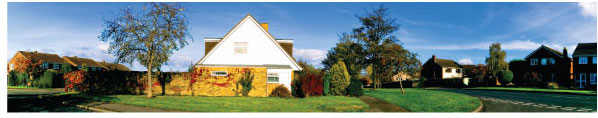

A local professional
Practical experience. Careful observation. Plain English.
Russ Mathewson brings decades of construction experience and more than two decades focused on home inspections in Ridgecrest and the Indian Wells Valley.

The Mathewson difference
Experience you can use.
Russ’s background ranges from repair and finish work to large-scale construction quality control. That perspective helps him connect visible conditions to the practical questions homeowners and buyers care about.
Every final claim about years, certifications, memberships, insurance and guarantees should be confirmed with Russ before launch so this page stays accurate.
Talk with RussCredentials & trust
Show the proof, beautifully.
This page is ready for verified InterNACHI, ASHI, CREIA, insurance, training certificates and guarantee details. Use real badge artwork and link each badge to its official verification page.